Graphiques avec ggplot2
R possède un puissant moteur graphique interne, qui permet de « dessiner » dans un graphique en y rajoutant des segments, des points, du texte, ou toutes sortes d’autres symboles. Toutefois, pour produire un graphique complet avec les fonctions basiques de R, il faut un peu bricoler : d’abord, ouvrir une fenêtre ; puis rajouter des points ; puis rajouter des lignes ; tout en configurant les couleurs au fur et à mesure ; puis finir par fermer la fenêtre graphique.
R est distribué avec un package qui permet de moins avoir à bricoler les graphiques : lattice. Mais surtout, R est aussi capable de comprendre la « grammaire graphique » théorisée par Leland Wilkinson, et traduite pour R par Hadley Wickham sous la forme du package ggplot2. Ce chapitre présente ces deux packages à partir d’un exemple simple de visualisation de séries temporelles, puis rentre dans le détail de la syntaxe de ggplot2.
Les données de l’exemple
Il y a quelques années, les chercheurs Carmen M. Reinhart et Kenneth S. Rogoff publiaient un article intitulé « Growth in a Time of Debt », dans lequel ils faisaient la démonstration qu’un niveau élevé de dette publique nuisait à la croissance économique. Plus exactement, les deux chercheurs y défendaient l’idée que, lorsque la dette publique dépasse 90% du produit intérieur brut, ce produit cesse de croître.
Cette conclusion, proche du discours porté par des institutions comme le Fonds Monétaire International, a alimenté plusieurs argumentaires politiques. Des parlementaires américains s’en ainsi sont servi pour exiger une diminution du budget fédéral, et surtout, la Commission européenne s’est appuyée sur cet argumentaire pour exiger que des pays comme la Grèce, durement frappés par la crise financière globale de 2008, adoptent des plans d’austérité drastiques.
Or, en tentant de reproduire les résultats de Reinhart et Rogoff, les chercheurs Thomas Herndon, Michael Ash et Robert Pollin y ont trouvé de nombreuses erreurs de raisonnement, ainsi qu’une bête erreur de calcul due à une utilisation peu attentive du logiciel Microsoft Excel. le petit scandale que déclencha la révélation de ces erreurs donna lieu à un débat très vif entre adversaires et partisans des politiques économiques d’austérité, débat toujours autant d’actualité aujourd’hui.
Dans ce chapitre, on va se servir des données (corrigées) de Reinhart et Rogoff pour évaluer, de manière indépendante, la cohérence de leur argument sur le rapport entre endettement et croissance économique. Commençons par récupérer ces données au format CSV sur le site du chercheur américain Cosma Shalizi, qui utilise ces données dans l’un de ses exercices de cours :
# emplacement souhaité pour le jeu de données
file = "data/debt.csv"
# télécharger le jeu de données s'il n'existe pas
if(!file.exists(file))
download.file("http://www.stat.cmu.edu/~cshalizi/uADA/13/hw/11/debt.csv",
file, mode = "wb")
# charger les données dans l'objet 'debt'
debt = read.csv(file)Nettoyage des données
Les données de Reinhart et Rogoff contiennent, pour un échantillon de 20 pays occidentaux membres de la zone OCDE, la croissance de leur produit intérieur brut (PIB), et le ratio entre leur dette publique et ce produit, exprimé sous la forme d’un pourcentage « Dette / PIB ». Les données vont du milieu des années 1940 à la fin des années 2000. La première colonne du jeu de données n’étant pas utile, on va la supprimer d’entrée de jeu :
str(debt)
debt = debt[, -1]Il faut aussi noter d’emblée que certaines mesures sont manquantes : pour certains pays, on ne dispose pas d’une mesure fiable du PIB ou de la dette publique. En conséquence, le nombre d’observations par pays est différent, et va de 40 observations « pays-année » pour la Grèce à 64 observations « pays-année » pour plusieurs pays comme l’Australie ou les États-Unis :
table(debt$Country)
Australia Austria Belgium Canada
64 59 63 64
Denmark Finland France Germany
56 64 54 59
Greece Ireland Italy Japan
40 63 59 54
Netherlands New Zealand Norway Portugal
53 64 64 58
Spain Sweden UK US
42 64 63 64 Recodage d’une variable
Dernière manipulation préalable avant l’analyse : on va calculer la décennie de chaque observation, en divisant l’année de mesure par 10, et en multipliant la partie entière de ce résultat par 10. Cette manipulation très simple donne « 1940 » pour les mesures des années 1940 à 1949, « 1950 » pour les années 1950-1959, et ainsi de suite.
# decade variable
debt$Decade = factor(10 * debt$Year%/%10)Voici, pour terminer, les premières lignes du jeu de données sur lequel on travaille :
head(debt) X Country Year growth ratio Decade
1 147 Australia 1946 -3.557951 190.41908 1940
2 148 Australia 1947 2.459475 177.32137 1940
3 149 Australia 1948 6.437534 148.92981 1940
4 150 Australia 1949 6.611994 125.82870 1940
5 151 Australia 1950 6.920201 109.80940 1950
6 152 Australia 1951 4.272612 87.09448 1950Visualisation des données
Chargeons à présent les deux packages graphiques dont nous allons nous servir dans cet exemple :
library(ggplot2)
library(lattice)Procédons désormais à quelques visualisations très simples de ces données. On dispose de trois variables continues : l’année, le taux de croissance du PIB, et le ratio « Dette publique / PIB ». Si l’on souhaite visualiser la croissance du PIB au cours du temps, la solution basique dans R s’écrit de la manière suivante :
with(debt, plot(Year, growth))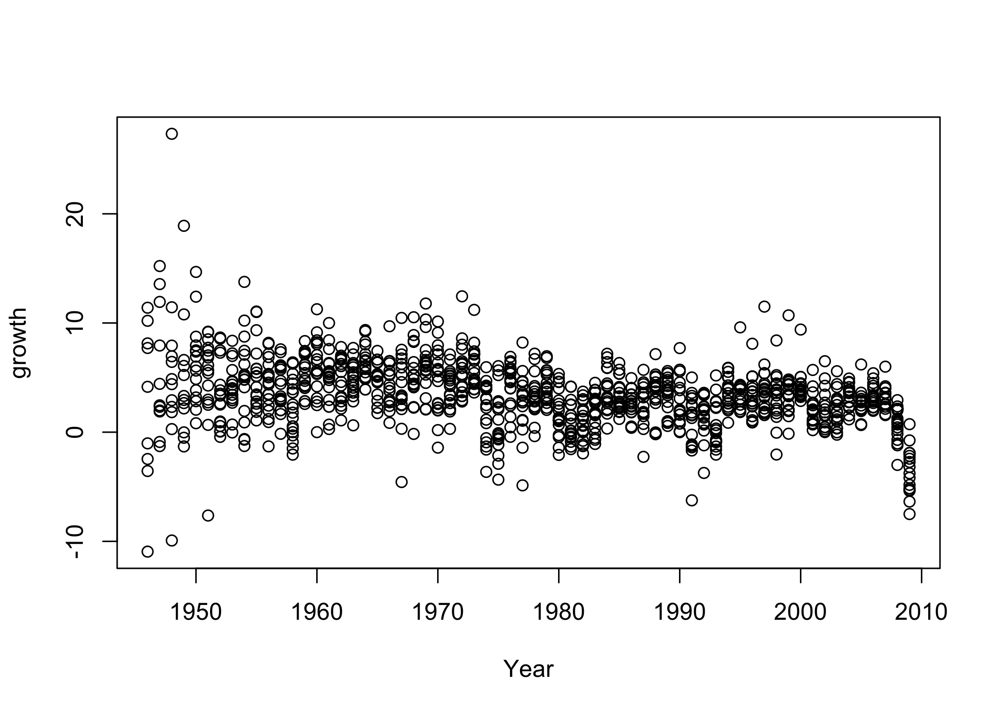
Le code de la visualisation est très simple et se lit : « avec l’objet debt, construire le graphique montrant l’année d’observation Year en abcisse et le taux de croissance du PIB growth en ordonnée ». Le code est compris de cette manière par R car la fonction plot comprend le premier argument comme étant la variable à représenter sur l’axe horizontal x, et le second comme la variable à représenter sur l’axe vertical y.
Le même graphique s’écrit de la mnière suivante avec le package lattice :
with(debt, xyplot(growth ~ Year))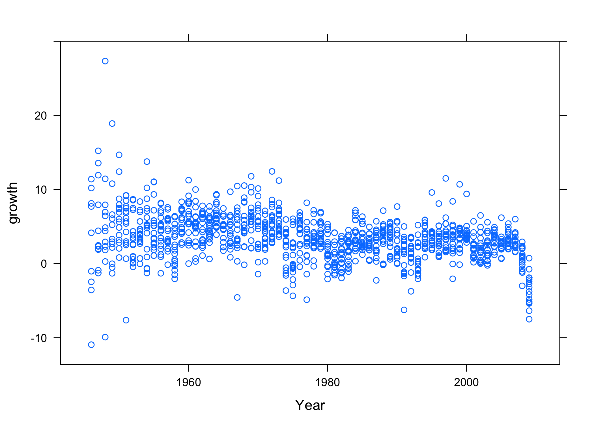
Comme on peut le voir, le code est très proche du code utilisé dans « R base », et le résultat est le même, bien que plusieurs paramètres graphiques aient changé : cette couleur bleu clair est caractéristique des graphiques de lattice, qui l’utilisent par défaut. La véritable différence réside dans la formule growth ~ Year : lattice utilise en effet la même syntaxe y ~ x que les équations de R.
Voici enfin le même graphique avec ggplot2 :
with(debt, qplot(Year, growth))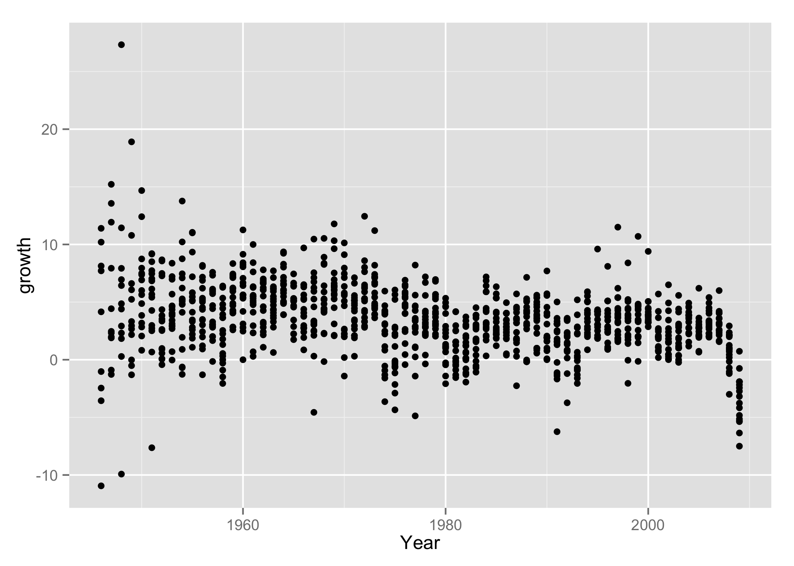
La syntaxe de cet exemple est redevenue : « avec le jeu de données debt, visualiser les variables Year sur l’axe x et growth sur l’axe y ». Il faut aussi noter que, dans les deux exemples précédents, on a écrit with(debt, ...) pour indiquer que l’on travaillait avec l’objet debt, mais les packages lattice et ggplot2 permettent aussi d’utiliser l’argument data pour ce faire :
xyplot(growth ~ Year, data = debt)
qplot(Year, growth, data = debt)Visualisation par « petits multiples »
Cherchons désormais à mieux comprendre les variations du taux de croissance du PIB au fil des années.
Dans les graphiques précédents, on voit clairement que ce taux est très variable dans l’immédiat après-guerre, puis qu’il oscille entre environ -5% et +15%, puis qu’il semble chuter dramatiquement à la fin des années 2000, marquées par la crise financière globale. Mais comment visualiser ces variations pour chacun des vingt pays de l’échantillon ?
On va ici utiliser le principe de la visualisation par « petits multiples », c’est-à-dire que l’on va reproduire le même graphique pour chacun des pays, et visualiser l’ensemble des graphiques dans une même fenêtre. Le package lattice permet de le faire en ajoutant un terme à l’équation vue précédemment, qui va désormais signifier « montrer la croissance du PIB par année pour chaque pays“ » :
xyplot(growth ~ Year | Country, data = debt)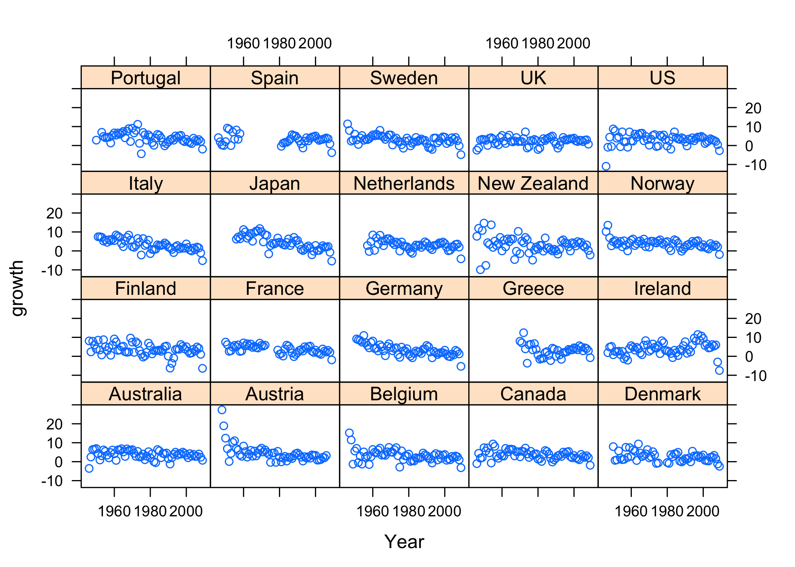
Voilà qui est beaucoup plus clair ! On aperçoit bien, dans ce graphique, les variations très importantes de croissance du PIB dans un pays comme l’Autriche, ruinée après la Seconde guerre mondiale, ou l’Irlande, très durement frappée par la crise financière globale en 2008 et 2009. On aperçoit aussi où se trouvent les données manquantes : voir le graphique de l’Espagne, par exemple.
Le même graphique avec ggplot2 va introduire deux éléments essentiels de sa grammaire graphique. D’une part, on va améliorer le graphique en utilisant des lignes plutôt que des points, en utilisant l’argument geom = "line". D’autre part, on va diviser le graphique par pays comme vu ci-dessus, avec l’argument facet_wrap(~ Country), qui utilise aussi la notation « équation » de R. Notez, enfin, que l’on va définir l’axe y avant de définir l’axe x, en écrivant ces arguments de manière explicite :
qplot(data = debt, y = growth, x = Year, geom = "line") +
facet_wrap(~Country)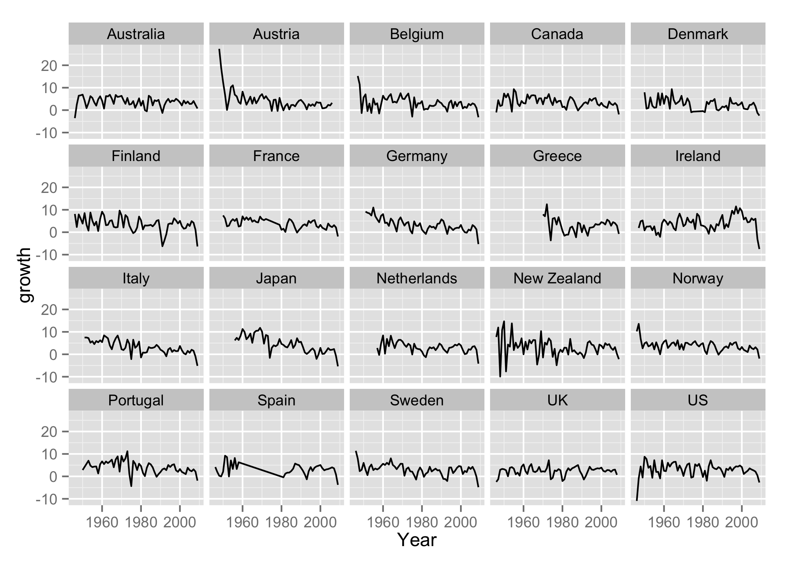
Il faut noter que ggplot2 a ici réordonné les pays par ordre alphabétique, et que la visualisation par ligne tend à rendre plus difficile les périodes pour lesquelles il manque des données (voir, toujours, la ligne pour l’Espagne). Le résultat est toutefois assez lisible, et donne à voir les couleurs utilisées par défaut par les graphiques de ggplot2.
Il faut aussi noter que ggplot2 utilise une syntaxe additive, où différents éléments et paramètres graphiques peuvent être combinés en les additionnant, ce qui permet de construire et de modifier des graphiques de manière cumulative, pas à pas. Cette caractéristique permet de tâtonner, et de construire progressivement des graphiques très complets.
Combinaisons d’éléments graphiques
On n’a pas encore visualisé le ratio « Dette publique / PIB », l’autre variable du raisonnement de Reinhart et Rogoff. C’est l’occasion de voir comment rajouter des titres aux axes des graphiques de lattice, et d’utiliser les lignes en même temps que des points, grâce à l’argument type, qui peut prendre plusieurs valeurs (ici, "o" produit les points et "l" produit les lignes) :
xyplot(ratio ~ Year | Country, data = debt,
type = c("o", "l"),
xlab = "Année",
ylab = "Ratio dette publique / produit intérieur brut")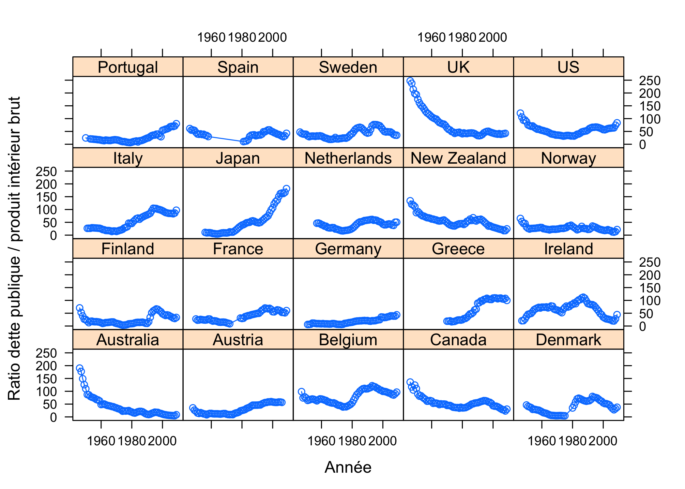
Avec ggplot2, la syntaxe est assez proche : il suffit de combiner deux « objets géométriques » (geom) pour afficher à la fois des points (point) et des lignes (line). On définit ensuite les titres des axes, en supprimant celui de l’axe x, et en rajoutant un peu d’espace entre le titre de l’axe y et l’axe lui-même grâce à la chaîne de caractères finale \n, qui rajoute une ligne vide entre ces deux éléments :
qplot(data = debt, y = ratio, x = Year, geom = c("line", "point")) +
facet_wrap(~ Country) +
labs(x = NULL,
y = "Ratio dette publique / produit intérieur brut\n")
Les différents exemples vus ci-dessus demandent d’apprendre un minimum de syntaxe graphique en se familiarisant soit avec lattice, soit avec ggplot2. Ce petit investissement permet de savoir très vite produire de très nombreux graphiques, assez élégants de surcroît. La suite du texte se concentre sur l’apprentissage de la syntaxe de ggplot2.
Composition graphique avec ggplot2
La section précédente a montré comment utiliser la fonction qplot (« quick plot »). La syntaxe complète du package ggplot2 passe par une autre fonction, ggplot, qui permet de mieux comprendre les différents éléments de sa grammaire graphique. Dans cette section, on va détailler cette syntaxe pour en tirer un graphique plus complexe que les précédents.
Commençons par créer un « treillis de base » au graphique :
p = ggplot(data = debt, aes(y = growth, x = ratio))Aucun graphique ne s’affiche ici : en effet, ce que l’on a stocké, dans l’objet p, n’est pas un graphique complet, mais une base de travail. Cette base définit les coordonnées x et y du graphique dans l’argument aes (“aesthetics”). Ici, on a choisi de mettre la variable dépendante de Reinhart et Rogoff, growth (le taux de croissance du PIB), sur l’axe y, et la variable indépendante ratio (le ratio « Dette publique / PIB ») sur l’axe x.
Rajoutons désormais un objet géométrique, geom_point, qui va projeter, sur le graphique, des points aux coordonnées précédemment définies, et divisons le graphique par un « petit multiple », en projetant les points de chaque décennie dans une facette différente du graphique. Ce graphique propose une décomposition temporelle de la relation étudiée par Reinhart et Rogoff :
p + geom_point() +
facet_grid(. ~ Decade)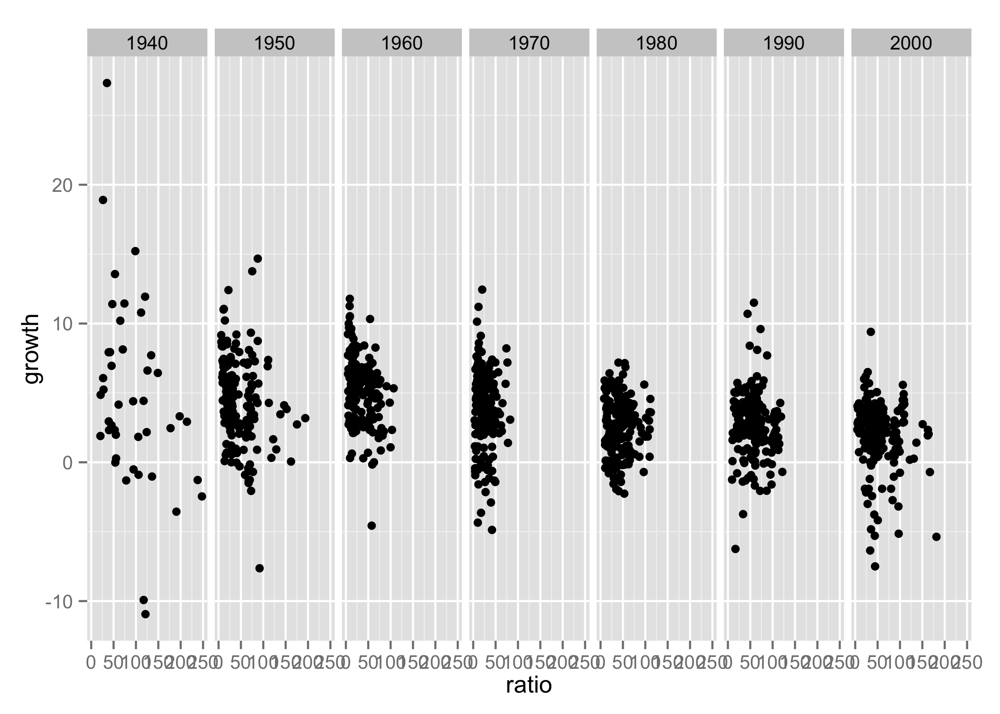
facet_grid permet de créer des facettes plus compliquées que celles créées par le paramètre facet_wrap. On s’en sert ici pour illustrer son fonctionnement, qui utilise aussi la notation « équation ».
Le graphique ci-dessus présente un problème fréquent : l’axe horizontal du graphique, très important puisque Reinhart et Rogoff évoquent un seuil « fatidique », pour la croissance, de 90% du PIB, est illisible. Grâce à l’argument scale_x_continuous, on va pouvoir clarifier cet axe en n’y faisant figurer que certaines valeurs :
p + geom_point() + facet_wrap(~Decade, nrow = 1) +
scale_x_continuous(breaks = seq(0, 200, by = 100))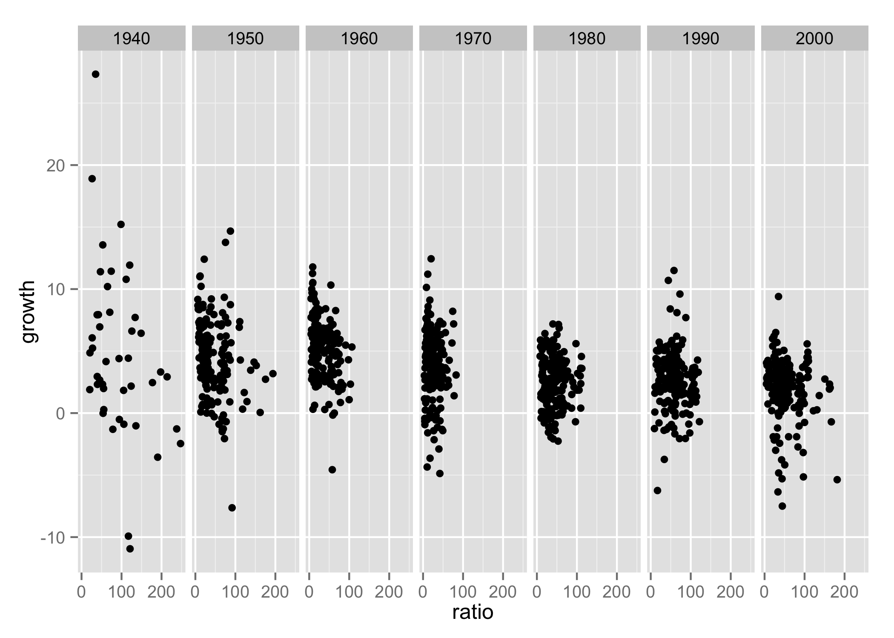
Ces réglages nous conviennent : on va donc les sauvegarder dans l’objet p, pour continuer de construire notre graphique en incluant ces différents éléments.
p = p + geom_point() + facet_wrap(~Decade, nrow = 1) +
scale_x_continuous(breaks = seq(0, 200, by = 100))Modification de paramètres
Abordons désormais un élément-clé de ggplot2 : la manipulation des paramètres esthétiques. Précédemment, on n’a montré que deux de ces paramètres : x et y, les coordonnées du graphique. Mais ces paramètres peuvent aussi influencer la couleur des points de notre graphique comme le montre l’exemple suivant :
p + aes(color = ratio < 90)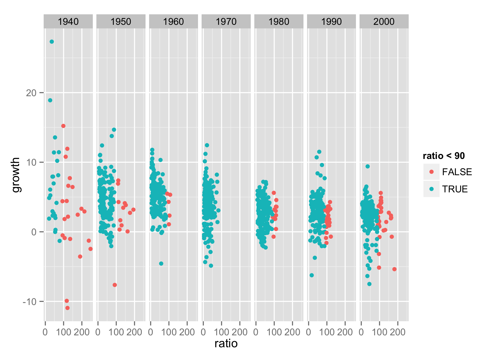
Qu’a-t-on fait ici ? On a rajouté, au graphique stocké dans p, un paramètre esthétique qui détermine la couleur de ses points en fonction d’une inégalité, ratio < 90, qui est vraie quand le ratio « Dette publique / PIB » est inférieur au seuil « fatidique » de Reinhart et Rogoff, et fausse quand ce ratio dépasse ce seuil. Les couleurs des points correspondent aux couleurs par défaut de ggplot2, que l’on peut très facilement modifier avec une autre variante du paramètre scale :
p + aes(color = ratio < 90) + scale_color_brewer(palette = "Set1")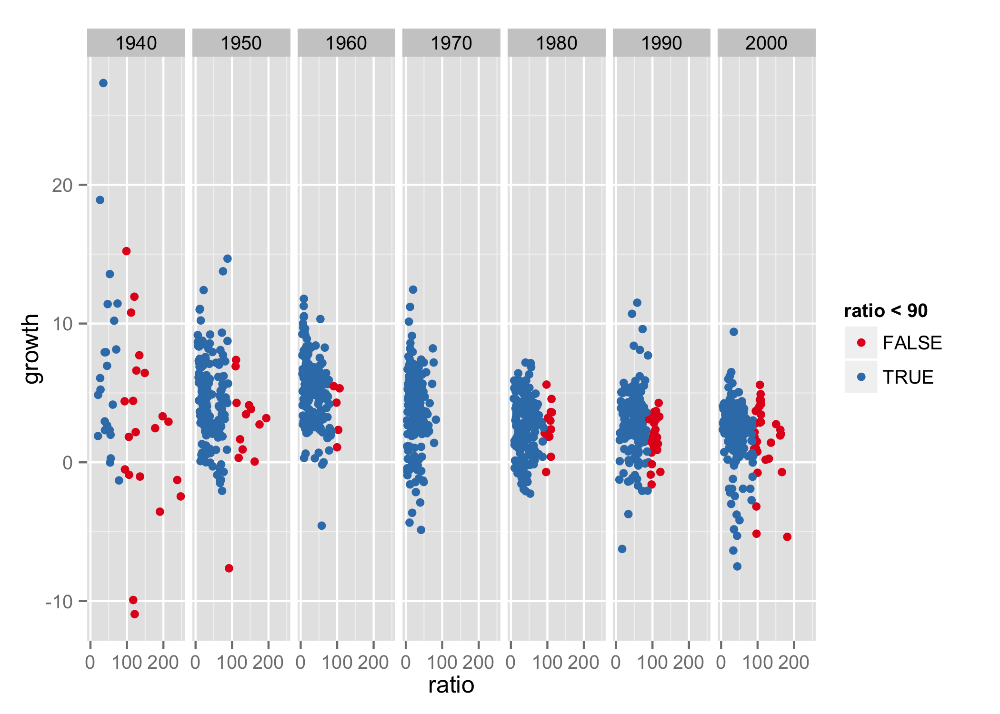
Ici, on a fait appel à la palette de couleur Set1 de l’éventail de couleurs ColorBrewer, qui est automatiquement disponible dans ggplot2, et qui est contenu dans le package RColorBrewer. La palette de couleurs que l’on a choisie affiche les points situés au-dessus du seuil « fatidique » de Reinhart et Rogoff en rouge, les autres en bleu.
Que peut-on dire, à ce stade, du seuil « fatidique » de Reinhart et Rogoff ? Après la Seconde guerre mondiale, de nombreux pays sont déjà endettés au-delà de ce seuil, et dégagent déjà moins de croissance que les autres. De nombreux critiques de Reinhart et Rogoff ont ainsi fait remarquer que leur raisonnement pose un sérieux problème d’inversion du rapport causal entre endettement et croissance au cours du temps.
Envisageons une nouvelle modification des paramètres graphiques. La légende du graphique, qui affiche FALSE et TRUE en fonction de l’inégalité ratio < 90, peut être déroutante. Clarifions un peu cette légende en supprimant son titre et en remplaçant les étiquettes (“labels”) FALSE et TRUE par leur signification :
p = p + aes(color = ratio < 90) +
scale_color_brewer("", palette = "Set1",
labels = c("ratio > 90", "ratio < 90"))Dans le bloc de code ci-dessus, on a stocké l’ensemble de nos modifications dans l’objet p, sans l’afficher ; en effet, on souhaite encore procéder à une dernière modification, en rajoutant une moyenne mobile à travers les points de chaque facette. Après consultation de la documentation de ggplot2 ici et là, on en arrive au code ci-dessous, où p produit le graphique précédent et geom_smooth produit cette moyenne mobile :
p + geom_smooth(method = "loess", se = FALSE,
size = 1, color = "black")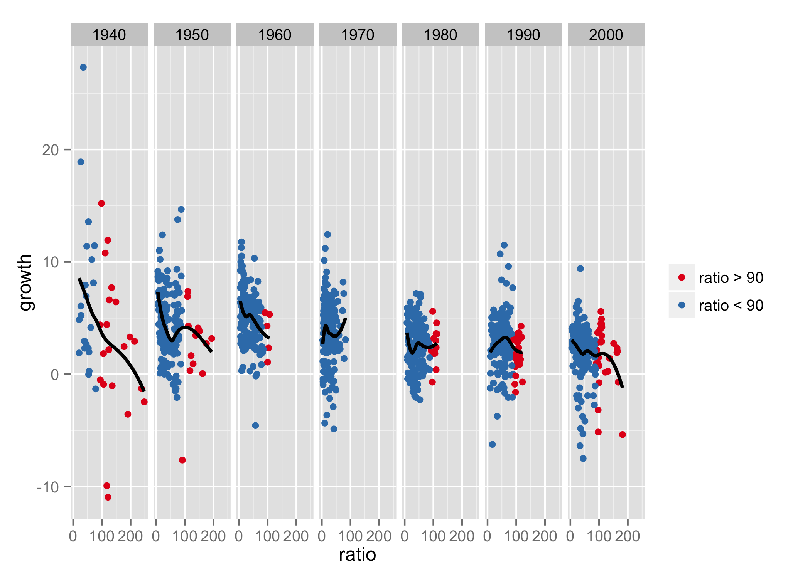
Le graphique permet d’évaluer de manière encore un peu plus précise l’argument de Reinhart et Rogoff, et en particulier la nature pas si « fatidique » du seuil de 90% du ratio “Dette publique / PIB”, qui sans être une bonne nouvelle pour l’économie, ne détermine pas « fatidiquement » la direction du taux de croissance : si c’était le cas, toutes les courbes du graphique ressembleraient à celles des années 2000. Autrement dit, l’argumentaire de Reinhart et Rogoff laisse clairement à désirer.
Utilisation des thèmes
Reprenons notre graphique du début. On va, pour terminer cette démonstration, en construire une version imprimable en noir et blanc, ce qui signifie qu’au lieu d’utiliser des couleurs pour distinguer les points en-deçà et au-delà du seuil « fatidique » de Reinhart et Rogoff, on va utiliser une ligne verticale, produite par geom_vline et affichée en pointillés par le paramètre lty (“linetype”) :
ggplot(data = debt, aes(y = growth, x = ratio)) +
geom_point(color = "grey50") +
geom_vline(xintercept = 90, lty = "dotted") +
geom_smooth(method = "loess", size = 1, color = "black", se = FALSE) +
scale_x_continuous(breaks = seq(0, 200, by = 100)) +
facet_wrap(~ Decade, nrow = 1) +
labs(y = "Taux de croissance du produit intérieur brut\n",
x = "\nRatio dette publique / produit intérieur brut",
title = "Données Reinhart et Rogoff corrigées, 1946-2009\n") +
theme_bw() +
theme(strip.background = element_rect(fill = "grey90", color = "grey50"),
strip.text = element_text(size = rel(1)),
panel.grid = element_blank())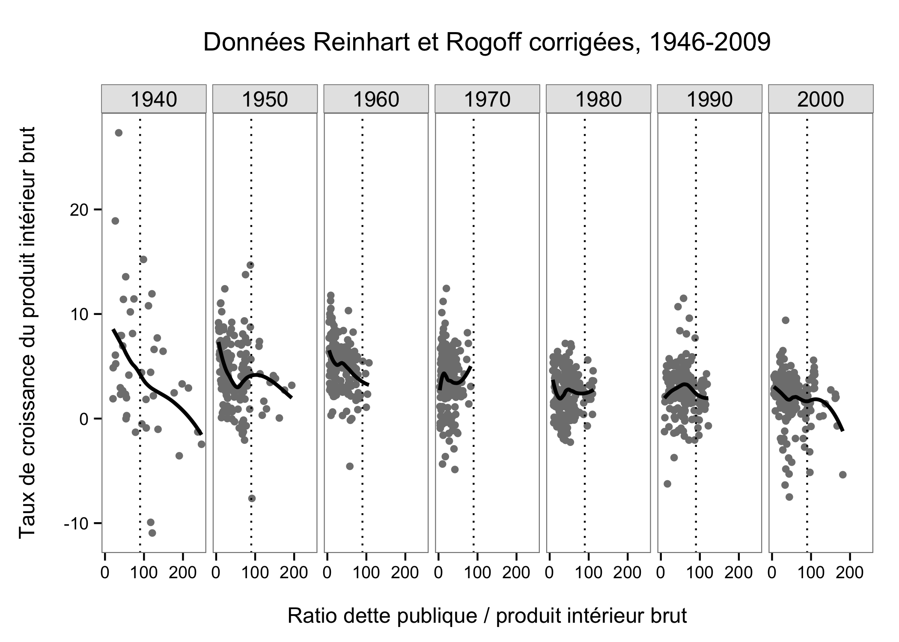
Ce graphique utilise tous les éléments présentés dans ce chapitre, ainsi qu’une dernière nouveauté : l’utilisation d’un thème graphique différent du thème par défaut de ggplot2. Le thème par défaut, qui s’appelle theme_grey, est ici remplacé par un thème moins chargé, theme_bw (“black and white”), que l’on a modifié en y rajoutant quelques paramètres supplémentaires :
- le paramètre
strip.backgrounddétermine la couleur du rectangle contenant les titres des facettes, c’est-à-dire les décennies observées ; - le paramètre
strip.textdétermine la taille des titres des facettes, qui sont ici affichés dans la même taille de texte que le reste du texte ; - et le paramètre
panel.gridsupprime ici les guides du graphique grâce à l’élément videelement_blank, de manière à en alléger la lecture.
Ces différents réglages peuvent être sauvegardés de manière à créer des thèmes réutilisables, comme ceux du package ggthemes, ce qui permet par exemple de créer un thème entièrement blanc dans lequel on peut ensuite projeter une carte, ou de produire une série de graphiques homogènes d’un point de vue esthétique.
Export des graphiques
Les graphiques produits par ggplot2 peuvent être sauvegardés manuellement, comme expliqué dans le chapitre « Exporter des graphiques », ou programmatiquement. Pour sauvegarder le dernier graphique affiché par ggplot2 au format PNG, il suffit d’utiliser la fonction ggsave, qui permet d’en régler la taille (en pouces) et la résolution (en pixels par pouce ; 72 par défaut) :
ggsave("reinhart-rogoff.png", width = 11, height = 8)De la même manière, pour sauvegarder n’importe quel graphique construit avec ggplot2 et stocké dans un objet, il suffit de préciser le nom de cet objet, comme ci-dessous, où l’on sauvegarde le graphique contenu dans l’objet p au format vectoriel PDF, qui préserve la netteté du texte et des autres éléments du graphique à n’importe quelle résolution d’affichage :
ggsave("reinhart-rogoff.pdf", plot = p,
width = 11, height = 8)Documentation sur ggplot2
Ce chapitre n’a pu faire la démonstration que d’une infime partie des manières d’utiliser ggplot2. En voici une dernière illustration, qui donne une idée des différents types de graphiques que le package permet de produire dès que l’on connaît les principaux éléments de sa syntaxe :
ggplot(data = debt, aes(x = ratio > 90, y = growth)) +
geom_boxplot() +
scale_x_discrete(labels = c("< 90", "90+")) +
facet_grid(. ~ Decade) +
labs(y = "Taux de croissance du produit intérieur brut\n",
x = "\nRatio dette publique / produit intérieur brut",
title = "Données Reinhart et Rogoff corrigées, 1946-2009\n") +
theme_linedraw() +
theme(strip.text = element_text(size = rel(1)),
panel.grid = element_blank())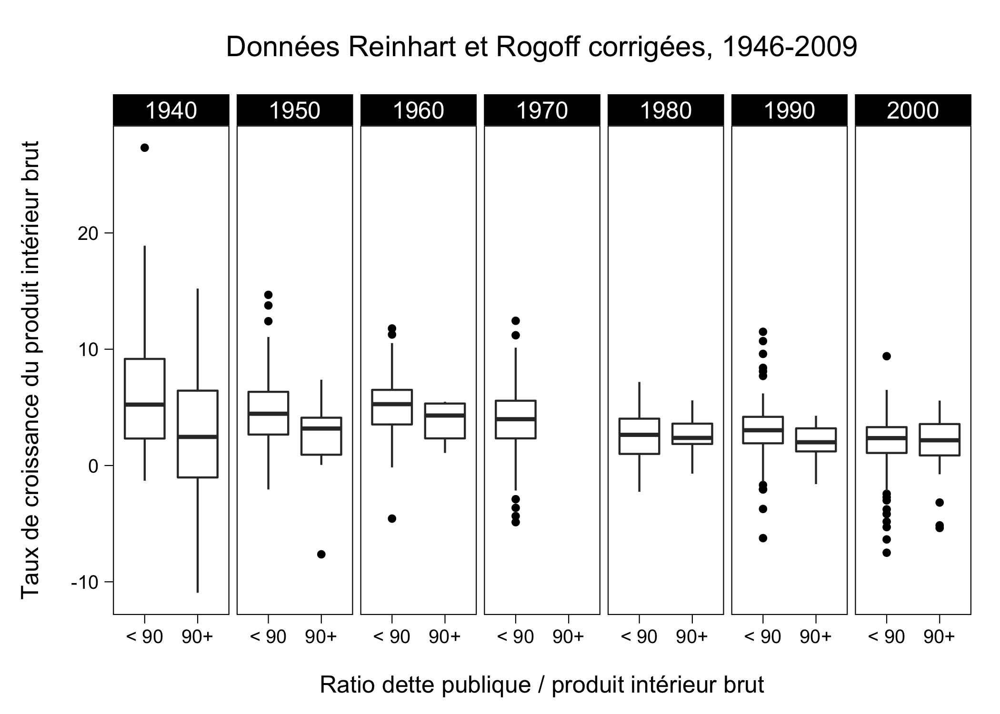
Le code ci-dessus est somme toute très proche du code présenté dans le reste du texte, et en même temps, on a basculé de la visualisation sous forme de série temporelles à une visualisation par boxplots. Ces basculements sont très faciles à envisager dès que l’on maîtrise les principaux éléments de ggplot2, geom, scale et facet, et les paramètres labs et theme pour effectuer les finitions.
Pour tout ce qui concerne l’utilisation de ggplot2, l’ouvrage de Wickham, en cours d’actualisation, est la ressource essentielle à consulter. L’ouvrage de Winston Chang, qui contient des dizaines d’exemples, complète utilement, de même que la documentation en ligne du package. Enfin, le site de questions/réponses StackOverflow contient de très nombreuses discussion des subtilités de sa syntaxe.
On trouve aussi très facilement, ailleurs sur Internet, des dizaines de tutorials et autres cheatsheets pour ggplot2, ici ou là par exemple. Enfin, il faut signaler quelques-unes des différentes extensions que le package a inspirées, dont la plupart sont encore en cours de développement :
- le package ggfortify permet de visualiser les résultats de différentes fonctions de modélisation avec ggplot2 ;
- le package GGally rajoute quelques types de graphiques à ceux que ggplot2 peut produire par défaut ;
- et des packages comme ggvis permettent de produire des graphiques interactifs en utilisant la syntaxe de base de ggplot2.